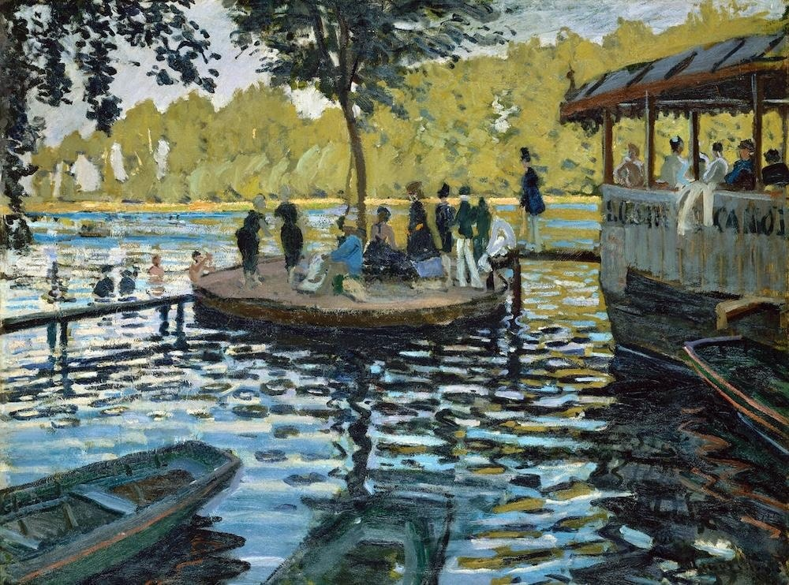
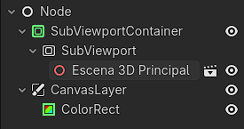

Why on earth did I want to do this?
One day, looking for inspiration to create new games, I came across a game called A Short Hike and its art style really stuck with me. It's a 3D world with a pixelated shader on top and I thought: WOW, what is this? How is it made? So I started researching.
The only shaders I knew were Minecraft shaders, which most people know as a way to modify Minecraft to add visual effects — usually realistic ones, though there are others that go in different directions.
While researching I discovered what became my shader bible: The Book of Shaders by Patricio Gonzalez Vivo and Jen Lowe. Then I asked myself: what artistic style would be interesting in a video game? That's when the idea of imitating Claude Monet came to me.
When I was a kid, my parents bought art magazines that came with the newspaper. One of them was about Monet. I was completely fascinated by his work, which is why I chose him over any other style.

Before the code, the paintings.
The first thing I noticed in Monet's paintings were the water reflections in Bathers at La Grenouillère. They're beautiful. The way he could capture people with so few brush strokes is remarkable.

Another thing I found fascinating was the way Monet paints clouds. These elements absolutely had to make it into the game.

My first shader was a blue rectangle.
My first experience coding shaders (GLSL) was on thebookofshaders.com. The "Hello World" looked something like this:
#ifdef GL_ES
precision mediump float;
#endif
uniform float u_time;
void main() {
gl_FragColor = vec4(1.0, 0.0, 1.0, 1.0);
}
This script paints every pixel of the object with a solid color. You can run it on shadertoy.com, a GLSL visualizer.
Learning from the book, I ran into a lot of advanced math I had to study. Things finally clicked when I managed to animate a red-to-black gradient using the sine function over time to smoothly oscillate values between 0 and 1.
By far the most confusing part was when we started using matrices in GLSL. I really should have paid more attention in class, lol. (bait)
The Kuwahara filter, or how to paint without painting.
The Kuwahara filter smooths uniform areas without destroying edges. For each pixel it follows 4 steps:
1. Look at a square region around the pixel.
2. Divide that square into 4 quadrants.
3. Find which quadrant is most "uniform" (most similar colors).
4. Pick that quadrant and use its average color.
This algorithm helps transform any image into something resembling a Monet painting, because it mimics how the human eye simplifies a scene — not just how a photo looks. Impressionist painting is precisely that: controlled simplification.
Here's the final code for Shadertoy:
#define KERNEL_SIZE 5
#define VIBRATION 0.04
#define BLOOM_STRENGTH 0.15
void mainImage(out vec4 fragColor, in vec2 fragCoord)
{
vec2 uv = fragCoord / iResolution.xy;
vec2 texel = 1.0 / iResolution.xy;
float n = float((KERNEL_SIZE + 1) * (KERNEL_SIZE + 1));
vec3 mean[4];
vec3 sigma[4];
for (int k = 0; k < 4; k++) {
mean[k] = vec3(0.0);
sigma[k] = vec3(0.0);
}
// Quadrant 0
for (int j = -KERNEL_SIZE; j <= 0; j++)
for (int i = -KERNEL_SIZE; i <= 0; i++) {
vec3 c = texture(iChannel0, uv + vec2(float(i), float(j)) * texel).rgb;
mean[0] += c; sigma[0] += c * c;
}
// Quadrant 1
for (int j = -KERNEL_SIZE; j <= 0; j++)
for (int i = 0; i <= KERNEL_SIZE; i++) {
vec3 c = texture(iChannel0, uv + vec2(float(i), float(j)) * texel).rgb;
mean[1] += c; sigma[1] += c * c;
}
// Quadrant 2
for (int j = 0; j <= KERNEL_SIZE; j++)
for (int i = -KERNEL_SIZE; i <= 0; i++) {
vec3 c = texture(iChannel0, uv + vec2(float(i), float(j)) * texel).rgb;
mean[2] += c; sigma[2] += c * c;
}
// Quadrant 3
for (int j = 0; j <= KERNEL_SIZE; j++)
for (int i = 0; i <= KERNEL_SIZE; i++) {
vec3 c = texture(iChannel0, uv + vec2(float(i), float(j)) * texel).rgb;
mean[3] += c; sigma[3] += c * c;
}
float min_sigma = 1e8;
vec3 result = vec3(0.0);
for (int k = 0; k < 4; k++) {
mean[k] /= n;
vec3 s = abs(sigma[k] / n - mean[k] * mean[k]);
float val = s.x + s.y + s.z;
if (val < min_sigma) { min_sigma = val; result = mean[k]; }
}
// Color vibration
vec2 noiseUV = uv * iResolution.xy * 0.8;
float noise = fract(sin(dot(noiseUV, vec2(12.9898, 78.233))) * 43758.5453);
noise = noise * 2.0 - 1.0;
result += noise * VIBRATION;
// Simple bloom
vec3 bloom = vec3(0.0);
float samples = 0.0;
for (float bj = -3.0; bj <= 3.0; bj++)
for (float bi = -3.0; bi <= 3.0; bi++) {
vec2 offset = vec2(bi, bj) * texel * 4.0;
vec3 s = texture(iChannel0, uv + offset).rgb;
float b = dot(s, vec3(0.299, 0.587, 0.114));
bloom += s * smoothstep(0.6, 1.0, b);
samples += 1.0;
}
bloom /= samples;
result += bloom * BLOOM_STRENGTH;
fragColor = vec4(result, 1.0);
}


Color vibration and a little bloom.
Kuwahara alone wasn't enough — it only simplifies and smooths colors. It doesn't add texture, brushstroke direction, or natural irregularity. It reduces detail but doesn't introduce gesture or visual energy. The result looked like a filtered photo, not a real painting.
So I added a tiny bit of static noise to each pixel:
// Color vibration — static noise per pixel
vec2 noiseUV = fragCoord * 0.8;
float noise = fract(sin(dot(noiseUV, vec2(12.9898, 78.233))) * 43758.5453);
noise = noise * 2.0 - 1.0;
float vibration = 0.04;
result += noise * vibration;
What does this noise do and why does it work?
Kuwahara smooths so much that everything can look flat and artificial. The noise introduces micro-variations, like the grain of paint on canvas.
Porting to Godot was easier than expected.
The main differences between Godot shaders and raw GLSL (Shadertoy) are:
GDShader (Godot)
Integrates into the Godot engine · Has built-in variables (SCREEN_UV, COLOR, etc.) · Works inside the engine pipeline · More practical for games
ShaderToy (GLSL)
Almost pure GLSL · Uses mainImage, iResolution, iChannel0 · More experimental · Ideal for prototypes and visual effects
With this scene structure and a sample 3D world, we got the shader running in real time.

I learned to write shaders. And other things.
After going through all this and discovering that you can create real art with mathematics, the way I see the world changed.
Now comes the next challenge: trying to build an actual game with all of this, and see if I can make something beautiful.
I wanted an impressionist filter. I ended up learning to see light.